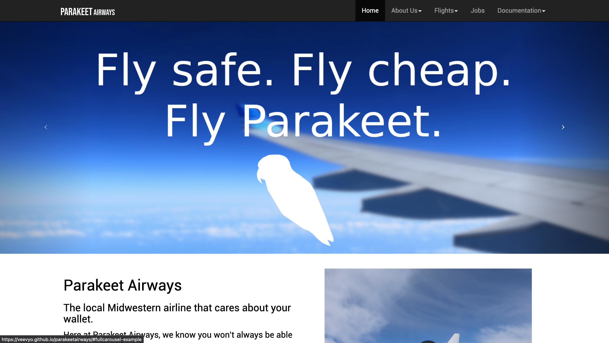

my programming portfolio
-

This very website!
I consider my personal site to be my love letter to HTML, CSS and Javascript.
Languages/tools used: HTML, CSS, JavaScript
-

"Parakeet Airways" website
This website was made for a fictional airline for the Future Business Leaders of America Website Design competition. It was awarded 10th place in the United States national competition for the 2019-2020 season.
Languages/tools used: HTML, CSS, JavaScript
-

Probability Guesser
I made this with a friend of mine (who does not wish to be credited) over the course of a couple of hours. Have a crack at it!
Languages/tools used: Python, matplotlib, NumPy, Tk, general knowledge of statistics
-
blockrush-84
One of my many calculator projects. My love affair with low level programming started when I was forced by my school to buy my first graphing calculator, a TI-84+CSE (the slowest color calculator on the market) and I decided I might as well get my money's worth by learning to program for it.
Languages/tools used: C, knowledge of eZ80 processor
-
Sonic Pi song anthology (WIP)
Hopefully you agree that this is marginally more appropriate to place in my programming portfolio rather than my music portfolio. These songs combine two of my loves, programming and composing.
Languages/tools used: Ruby, music theory
-
Horse desktop buddy
This is a little desktop buddy I made using Godot. It walks around the screen, and its color is randomized on startup.
Languages/tools used: Godot
-

Dracula WinAmp theme
Thanks to this theme, Dracula is the first organization on GitHub I've been invited to. Theming applications is one of my more casual programming hobbies.
Languages/tools used: Godot